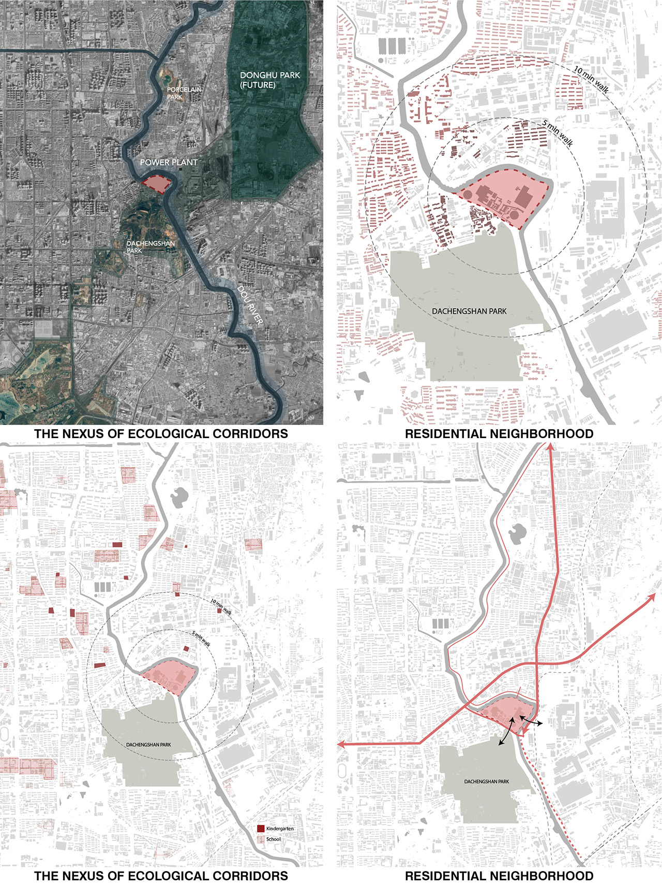
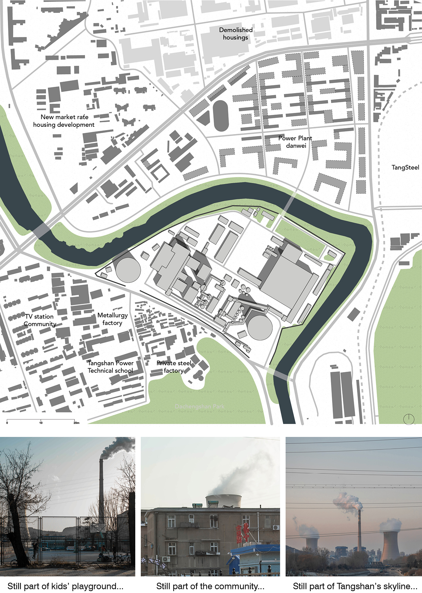
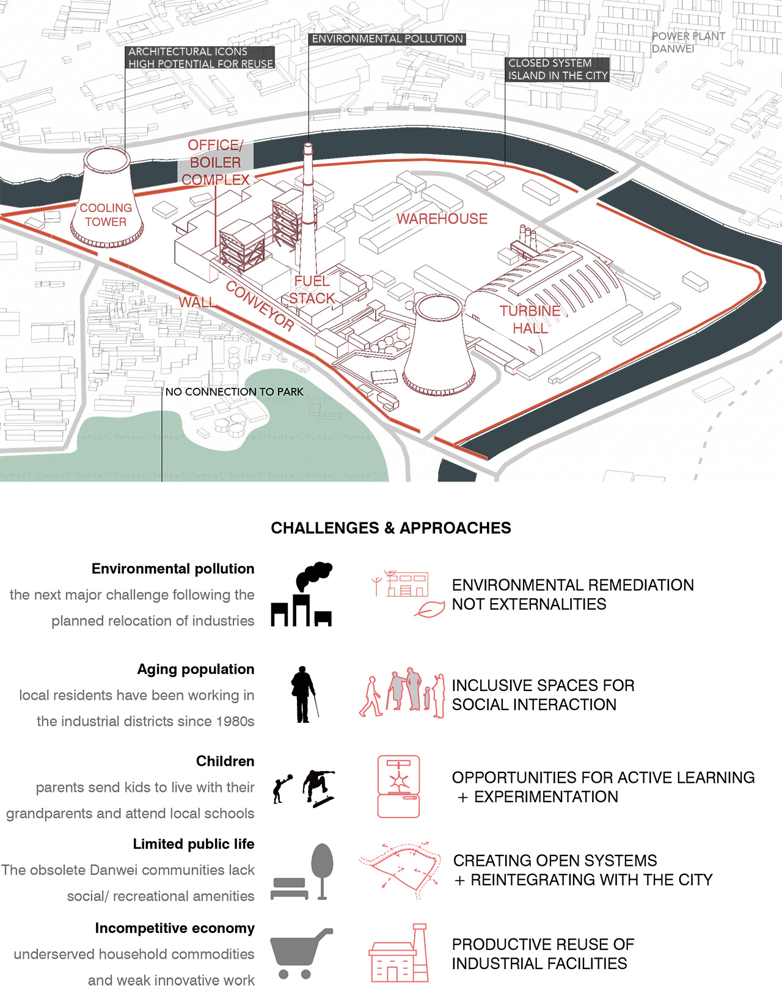

Power Plant at the Nexus
Although the power plant site has a limited footprint of 0.24 km2, it situates at the nexus of both ecological and social layers of the urban fabrics which brings tremendous potentials for its future.Ecologically, the site sits at the intersection of two future green corridors: the Nanhu Park in the Southwest to the proposed Donghu Park in the northeast. The Dou River, which meanders around the site, will serve as another green corridor after water remediation. On the other hand, the residential blocks around the site is declining with obsolate housings and amenities, industrial pollution, an emerging aging population, and banal educational resources for younger generations.
 Urban Context
 Site Conditions
 Design Approaches